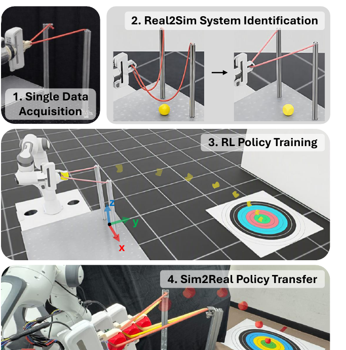
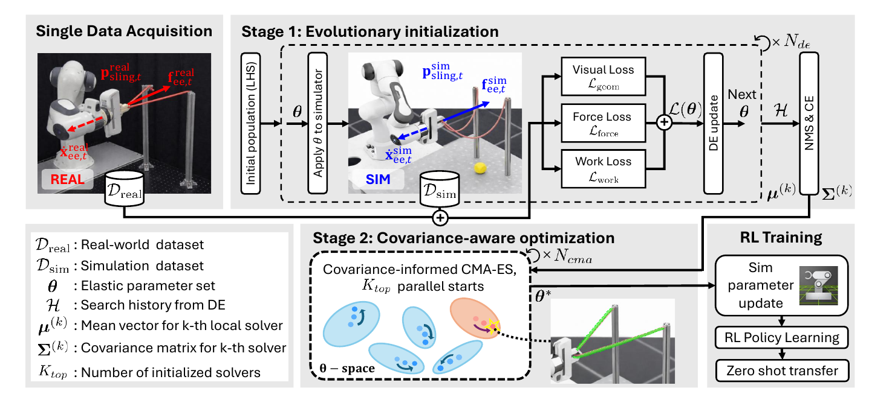
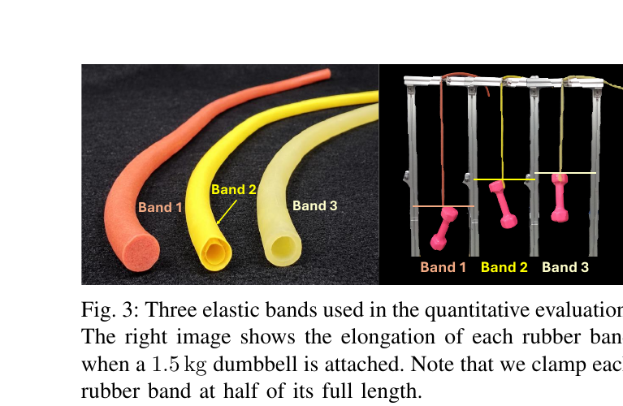
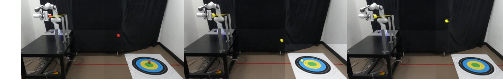
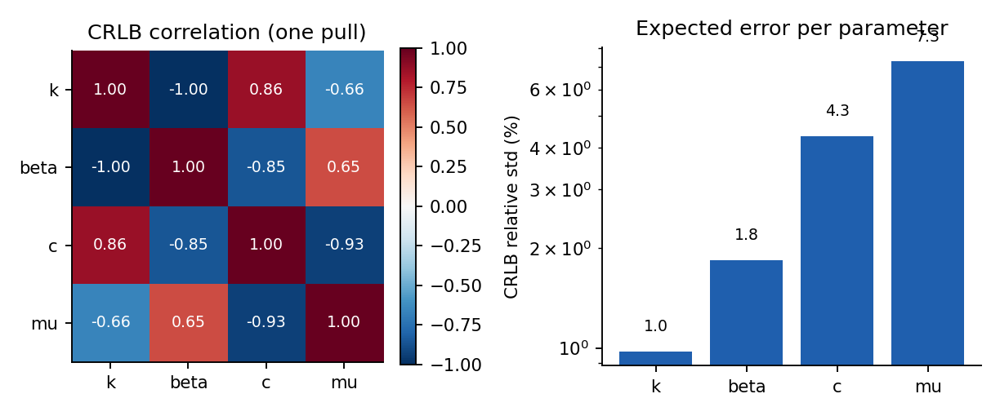
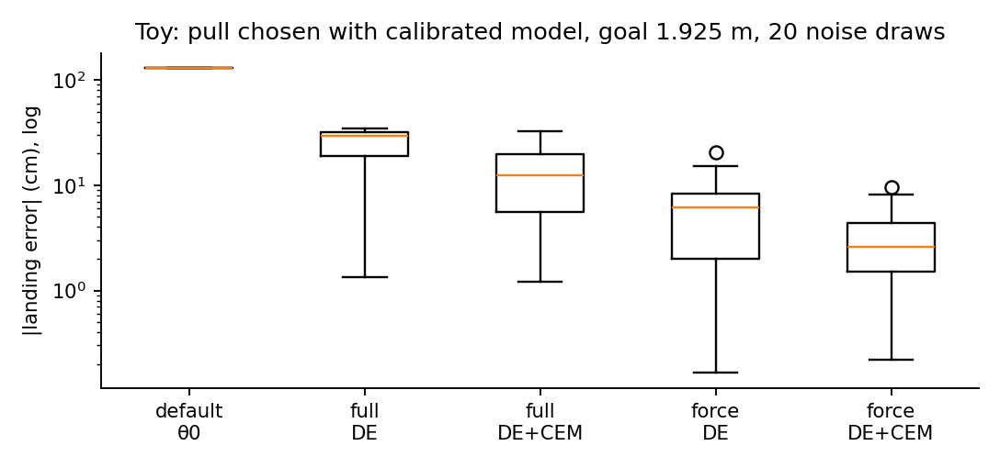

논문 Fig. 1: 한 번의 비파괴 상호작용으로 고무줄을 맞추고, 보정된 시뮬에서 정책을 학습해 실물에 옮깁니다. © 저자, CC BY 4.0. 원문 https://arxiv.org/abs/2607.23268
H에서 최솟값을 고르는데, 본문은 CMA-ES 결과를 쓴다고 합니다. 필터 차단 주파수 0.224 rad/s는 단위가 맞지 않아 보입니다.paper/paper.pdf, 추출 텍스트 paper/paper.txt). 인용은 논문의 절(§), 식(Eq.), 알고리즘(Alg.), 표(Table), 그림(Fig.) 번호로 합니다.analysis/02_prior_work.md §4)고무줄 한 번을 발사 없이 당겼다 놓는 기록으로 Isaac Sim의 탄성 파라미터 5개를 맞추고, 보정된 시뮬에서 새총 정책을 학습해 실물에 바로 옮깁니다. 보정은 DE로 넓게 찾은 뒤 공분산을 반영한 다중 시작 CMA-ES로 다듬습니다. 실험은 고무줄 3종 × 목표 거리 3개 × 5회입니다. 실물 평균 착탄 오차는 Band 2에서 14.2 cm로 Package SI의 35.2 cm보다 작지만, 목표 거리 212.5 cm에서는 Package SI(11.0 cm)가 더 좋습니다.
읽으면서 확인한 것을 먼저 적으면 다음과 같습니다.
analysis/03_analysis.md §1). 다른 행은 모두 맞습니다.H의 최솟값입니다(line 16). 본문은 공분산 기반 CMA-ES가 최종 해를 낸다고 설명합니다. 두 설명이 맞으려면 CMA-ES 해를 H에 넣어야 하는데, 그 내용이 없습니다.
논문 Fig. 2: 단일 기록 → 보정(DE 초기화, 공분산 CMA-ES) → 정책 학습 → 실물 전이. © 저자, CC BY 4.0. 원문 https://arxiv.org/abs/2607.23268
D_real = [(ẋ_ee,t, f_ee,t, p_sling,t)], T = 300 샘플(9 s)입니다.L = L_geom + L_force + L_work (Eq. 2). 가중치 w_geom, w_force, w_work는 "상수"라고만 하고 값이 없습니다.L_geom = Σ_t w_geom · CD(p^real_t, p^sim_t) (Eq. 3): 점군 Chamfer 거리. 10점 점군에서 Chamfer 거리가 얼마나 민감한지는 적혀 있지 않습니다.L_force = w_force Σ_t ||f^real_t − f^sim_t||² (Eq. 4): 샘플별 힘 차이.L_work = w_work | Σ_t [½(f^real_t·ẋ^real_t + f^real_{t+1}·ẋ^real_{t+1}) − (같은 식, sim)] | (Eq. 5): 사다리꼴로 쓴 일의 차이. 합이 망원급수 꼴이라 |W_real − W_sim|과 같습니다(analysis/03_analysis.md §3.2).L(θ)를 계산합니다. 초기 집단은 LHS입니다.H에서 손실 순으로 δ = 0.1 밖의 중심만 골라 K_top = 5개를 얻습니다(NMS). δ의 단위(정규화 공간인지 물리 단위인지)는 적혀 있지 않습니다.H에서 가까운 K_NN = 15개로 계산합니다(Alg. 1 줄 4).Σ = L Lᵀ(Cholesky)로 θ = µ + L z, z ~ N(0, I)을 샘플합니다([26] 방식). 초기 σ₀ = 1.0.θ* = argmin_{θ∈H} L(θ)입니다. CMA-ES가 새로 찾은 해가 H에 들어가는지 적혀 있지 않습니다. 이 불일치는 Table IV의 "−m", "−c" 비교가 실제로 무엇을 비교하는지에 영향을 줍니다(analysis/04_claim_verification.md C5).s = (x_proj, g): 발사체 위치 x_proj = (y_p, z_p) 2차원과 목표 거리 g.a = x_proj ∈ R²: 당김 위치. 발사 각도는 고무줄 평면에 맞춘다고 합니다.R = 5 e^{−|y_p − g|}, 실패 패널티 1, 과녁 반지름 20 cm (§III-C).T는 사실상 상태에서 끝나는 1단계 과정입니다. 그러므로 "정책"은 목표마다 발사 위치를 고르는 조회표에 가깝습니다.
논문 Fig. 3: 고무줄 세 종(Band 1–3). 오른쪽 사진은 1.5 kg 추를 달았을 때 늘어난 모습. © 저자, CC BY 4.0. 원문 https://arxiv.org/abs/2607.23268
| 항목 | 값 (논문) | 출처 |
|---|---|---|
| 로봇, 센서 | Franka Panda 7-DoF, 손목 6축 FT (Aidin AFT200, 1 kHz → 30 Hz), 외부 RGB-D (Orbbec Femto Bolt, 30 FPS) | §IV-A |
| 포크, 고무줄 | U자 포크 간격 27.5 cm, 자유 길이 52 cm, 발사체 39 g (3D 프린트), 과녁 1 m × 1 m | §IV-A |
| 시뮬 | Isaac Sim, 시간 간격 1/200 s, 솔버 반복 64, 고무줄 사면체 메쉬(길이 55 cm, 지름 1 cm) | §IV-A |
| 계산 환경 | AMD Threadripper Pro 5975WS, NVIDIA RTX 6000 Ada | §IV-A |
| 고무줄 | Band 1 실리콘(10 mm, 23 g, 최대 힘 12.18 N), Band 2 천연고무(8 mm, 17 g, 14.25 N), Band 3 라텍스(10 mm, 21 g, 16.7 N) | §IV-B, Fig. 3 |
| 목표 거리 | g = 172.5, 192.5, 212.5 cm | §IV-B |
| 시행 | 방법 × 고무줄 × 목표 = 셀당 5회 | §IV-B |
| 비교 | Real2Sim2Real [2] (DE, 영률·동마찰), Package SI [17] (베이지안, 영률·감쇠, 기하 손실), DEL, BOL, AdamL (각각 같은 L을 DE, 베이지안, Adam으로 최소화) | §IV-B |
θ = [E, ν, 탄성 감쇠, 동마찰, 감쇠 스케일]입니다(§III-A).| 고무줄 | 방법 | 172.5 | 192.5 | 212.5 | All targets |
|---|---|---|---|---|---|
| Band 1 (soft) | Real2Sim2Real | N/A | N/A | N/A | N/A |
| Package SI | 13.00 ± 1.87 | 1.50 ± 1.22 | 9.50 ± 2.50 | 8.00 ± 1.94 | |
| Sling2Sim2Real | 11.00 ± 2.00 | 1.00 ± 1.22 | 9.50 ± 4.30 | 7.17 ± 2.68 | |
| Band 2 (medium) | Real2Sim2Real | N/A | N/A | N/A | N/A |
| Package SI | 60.00 ± 2.74 | 34.50 ± 3.32 | 11.00 ± 6.44 | 35.17 ± 4.58 | |
| Sling2Sim2Real | 15.50 ± 1.87 | 3.50 ± 2.00 | 23.50 ± 2.55 | 14.17 ± 2.16 | |
| Band 3 (stiff) | Real2Sim2Real | N/A | N/A | N/A | N/A |
| Package SI | N/A | N/A | N/A | N/A | |
| Sling2Sim2Real | 35.50 ± 1.87 | 18.00 ± 1.87 | 3.50 ± 3.39 | 19.00 ± 2.47 |
L: Band 1에서 Sling2Sim2Real 1.98, Package SI 2.47 (−20%). Band 2에서 2.17 대 2.33 (−6.5%). Band 3에서 0.94 대 3.43 (−72.5%). 본문의 "최대 72.5%"는 Band 3입니다.
논문 Fig. 4: 실물 발사 궤적. 왼쪽부터 Sling2Sim2Real, Package SI, Real2Sim2Real. © 저자, CC BY 4.0. 원문 https://arxiv.org/abs/2607.23268
논문이 밝힌 한계 (§V)
읽으며 본 문제 (근거는 analysis/04_claim_verification.md)
H 기준이라 CMA-ES의 기여가 불분명합니다 (C5).w_geom, w_force, w_work, DE 집단 크기와 세대 수, CMA 집단 크기, NMS δ의 단위 등 재구현에 필요한 값이 빠져 있습니다.analysis/03_analysis.md §5). 그러면 보정 오차가 착탄 오차로 얼마나 전달되는지가 핵심입니다.재계산 스크립트와 결과: analysis/table_check.py → table_check_results.json, analysis/sysid_toy.py → sysid_toy_results.json, analysis/model_error_check.py → model_error_results.json. 모두 CPU 1스레드입니다. toy의 장치(모델, 잡음, 손실 가중치)는 논문과 다르고, 모두 가정입니다.
공통 가정: 표의 "±"는 셀당 5회 시도의 표준편차(SD)로 둡니다. 논문은 SD인지 표준오차인지 적지 않았습니다. SD라고 가정하면 Welch t 검정을 쓸 수 있습니다.
셀 평균 세 개의 산술 평균을 "All targets"와 비교했습니다.
| 행 (표) | 셀 평균 (172.5 / 192.5 / 212.5) | 산술 평균 | 보고값 | 차이 | 보고된 ± | 셀 SD 제곱평균의 제곱근 |
|---|---|---|---|---|---|---|
| Band 1 Package SI (I) | 13.00 / 1.50 / 9.50 | 8.00 | 8.00 | 0 | 1.94 | 1.94 |
| Band 1 Sling2Sim2Real (I, III, IV) | 11.00 / 1.00 / 9.50 | 7.17 | 7.17 | 0 | 2.68 | 2.83 |
| Band 2 Package SI (I) | 60.00 / 34.50 / 11.00 | 35.17 | 35.17 | 0 | 4.58 | 4.47 |
| Band 2 Sling2Sim2Real (I) | 15.50 / 3.50 / 23.50 | 14.17 | 14.17 | 0 | 2.16 | 2.16 |
| Band 3 Sling2Sim2Real (I) | 35.50 / 18.00 / 3.50 | 19.00 | 19.00 | 0 | 2.47 | 2.48 |
| DEL (III) | 19.00 / 11.50 / 3.00 | 11.17 | 11.17 | 0 | 0.85 | 1.47 |
| BOL (III) | 16.50 / 3.00 / 8.00 | 9.17 | 9.17 | 0 | 2.12 | 3.70 |
| AdamL (III) | 11.00 / 20.00 / 34.50 | 21.83 | 21.83 | 0 | 2.31 | 3.98 |
| −c,−m (IV) | 15.00 / 6.00 / 0.50 | 7.17 | 7.83 | +0.66 | 5.39 | 1.83 |
| −m (IV) | 29.50 / 15.00 / 16.50 | 20.33 | 20.33 | 0 | 7.18 | 3.03 |
| −c (IV) | 22.50 / 1.00 / 6.50 | 10.00 | 10.00 | 0 | 9.91 | 3.90 |
| −Lwork (IV) | 33.00 / 30.00 / 20.50 | 27.83 | 27.83 | 0 | 5.62 | 1.78 |
결과:
| 목표 | Sling2Sim2Real | Package SI | 차이 (S2S − Pkg) | t | p |
|---|---|---|---|---|---|
| Band 2, 172.5 | 15.50 ± 1.87 | 60.00 ± 2.74 | −44.5 | −30.0 | 1.0·10⁻⁸ |
| Band 2, 192.5 | 3.50 ± 2.00 | 34.50 ± 3.32 | −31.0 | −17.9 | 8.2·10⁻⁷ |
| Band 2, 212.5 | 23.50 ± 2.55 | 11.00 ± 6.44 | +12.5 | +4.04 | 0.009 (Package SI가 낫다) |
셀 평균과 SD로 15회 분포의 평균과 SD를 추정했습니다(셀 내 분산 평균 + 셀 평균들의 분산).
| 고무줄 | 제안 평균 (SD 추정) | Package SI 평균 (SD 추정) | 차이 | t | p | 상대 감소 |
|---|---|---|---|---|---|---|
| Band 2 | 14.17 (8.8) | 35.17 (21.2) | −21.0 | −3.54 | 0.002 | 59.7% |
| Band 1 | 7.17 | 8.00 | −0.83 | −0.42 | 0.68 | 10.4% (유의하지 않음) |
| 비교 | 평균 | p |
|---|---|---|
| DEL | 11.17 | 0.09 |
| BOL | 9.17 | 0.39 |
| AdamL | 21.83 | 1.3·10⁻⁴ |
| −c | 10.00 | 0.36 |
| −m | 20.33 | 8·10⁻⁶ |
| −Lwork | 27.83 | 9·10⁻¹¹ |
(m₁₇₂ + m₁₉₂ + m₂₁₂)/3과 같아야 합니다. 12행 중 11행이 맞고 1행(−c,−m)이 틀립니다(§1).Eq. (5)의 안쪽 항은 구간 [t, t+1]의 사다리꼴 일입니다.
w_t = ½(f_t ẋ_t + f_{t+1} ẋ_{t+1}) Δt.
사다리꼴 구간들의 합은 전체 일의 사다리꼴 적분과 같으므로 Σ_t w_t = W_total입니다. 따라서 L_work = w_work |W_real − W_sim|입니다. 이 항은 총 일의 크기만 맞추고, 힘과 속도가 시간별로 어떻게 맞는지는 보지 않습니다. 즉 Eq. (5)는 힘 항(Eq. 4)과 독립된 정보가 아닐 수 있고, 같은 총 일을 내는 다른 θ를 구별하지 못합니다. 논문이 "감쇠로 소산되는 에너지를 맞춘다"고 한 것은 총 일의 크기가 감쇠에 민감하다는 뜻으로 이해할 수 있습니다.
발사를 무손실로 보고 고무줄 힘이 F(x) = k x (1 + β x)일 때, 당김 거리 d에서 저장된 에너지는 k d²/2 + k β d³/3입니다. 발사체 질량을 m, 발사각을 α라 하면
½ m v₀² = k (d²/2 + β d³/3), R = v₀² sin 2α / g = k (d² + 2β d³/3) sin 2α / (m g).
∂ ln R / ∂ ln k = 1입니다. 같은 d에서 k가 10% 틀리면 착탄 거리가 10% 틀립니다. 정책이 같은 모델로 d를 고르므로 이 오차는 d를 바꿔도 사라지지 않습니다.∂ ln R / ∂ ln d = (2d² + 2βd³) / (d² + 2βd³/3). β = 3, d = 0.2885 m이면 2.37이므로 dR/dd ≈ 2.37 R/d ≈ 15.8 m/m입니다. 1 cm 당김 위치 차이는 약 16 cm 착탄 차이입니다. 논문이 말한 "최대 30 cm"는 더 작은 d, 큰 β, 감쇠와 마찰 효과를 포함하면 가능한 크기입니다(toy에서 17 cm/cm).1차원 장력 모델에서 포아송 비는 들어갈 자리가 없습니다. 논문 모델에서는 사면체 메쉬의 체적 거동에 들어가므로 1차원 toy로는 답할 수 없습니다. 이 때문에 toy는 θ = (k, β, c, μ) 4개를 씁니다. 감쇠 스케일은 감쇠 계수와 곱하여 나타나므로 c 하나로 합쳤습니다.

직접 계산(toy): 왼쪽은 log θ 공간의 CRLB 상관 행렬, 오른쪽은 기대 상대 표준편차(로그 축). 강성과 비선형은 잘 정해지고 감쇠와 마찰은 얽혀 있다.
toy 모델 (sysid_toy.py): 손(질량 0.5 kg, 가정)을 0.40 m까지 3차 보간으로 당기고 1.5 s에 놓습니다. 100 Hz로 위치(σ = 3 mm), 힘(σ = 0.05 N), 속도(σ = 5 mm/s)를 봅니다. 피셔 정보는 log θ 공간에서 중앙차분으로 계산했습니다.
| 파라미터 | 참값 | 기대 상대 SD (CRLB) | 상관 (가장 강한 것) |
|---|---|---|---|
| k [N/m] | 9.0 | 0.98% | k–β −0.998 |
| β [1/m] | 3.0 | 1.84% | k–c 0.86, β–μ 0.65 |
| c [N s/m] | 0.15 | 4.34% | c–μ −0.93 |
| μ [N] | 0.10 | 7.29% | c–μ −0.93 |
θ에서 R = 1.925 m를 맞추는 당김은 d* = 0.2885 m입니다.∂R/∂ln θ (m): k 2.43, β 0.87, c −0.75, μ −0.12.보정 오차를 같은 당김에 넣었을 때 (model_error_check.py):
| 보정 오차 | 같은 당김에서 착탄 오차 (cm) | 재계산한 당김으로 낸 실제 착탄 오차 (cm) |
|---|---|---|
| k × 1.1 | +24.4 | −21.8 |
| β × 1.3 | +26.4 | −22.7 |
| c × 2 | −66.9 | +97.0 |
| μ × 2 | −12.5 | +12.8 |
| k × 1.1, β ÷ 1.1 | +15.6 | −14.6 |
c에 대한 민감도가 가장 큽니다. 논문은 감쇠를 5개 파라미터에 넣었는데, 그 감쇠가 착탄 거리를 가장 많이 바꾸는 것으로 toy에서 보입니다. 이 결과는 논문 Table II에서 감쇠 값이 기준선마다 2–3배 차이 나는 점과 연결됩니다.
직접 계산(toy): 목표 1.925 m에서 보정 모델로 당김을 고른 뒤 실제 착탄 오차(절댓값, cm, 로그 축). 보정이 없으면 130 cm이다.
설정: 손실 두 가지 — 전체(L_geom + L_force + L_work, 가중치는 잡음 SD로 맞춤: 위치 3 mm, 힘 0.05 N, 일 0.015 J) 와 힘만(L_force). 최적화는 DE 한 번 → 공분산 CEM → Nelder-Mead(두 손실 공통). "DE"는 DE 최솟값만 쓴 경우입니다.
| 손실 | 최적화 | 착탄 절대오차 평균 (cm), g = 1.925 m | 중앙값 | p90 |
|---|---|---|---|---|
| 기본값 θ₀ (보정 없음) | — | 130.1 | — | — |
| 전체 | DE | 24.5 | 29.3 | 32.7 |
| 전체 | DE + 공분산 CEM | 13.9 | 12.4 | 30.2 |
| 힘만 | DE | 6.5 | 6.1 | 12.9 |
| 힘만 | DE + 공분산 CEM | 3.3 | 2.6 | 7.5 |
θ 상대오차 (중앙값 / p90, %): 힘만 — k 0.9/1.9, β 1.7/3.2, c 5.2/13.1, μ 8.3/15.5. 전체 — k 4.4/12.2, β 8.6/24.1, c 30.9/84.0, μ 56.9/144.1.
해석과 주의:
α = 35°를 씁니다. 논문의 3차원 Isaac Sim과 다릅니다.d를 역으로 풀어서 얻은 "이상적인 정책"입니다. 논문 정책의 한계(PPO 샘플 수 등)는 반영하지 않았습니다.sysid_toy.py 약 130 s(20회), table_check.py 1 s 미만, model_error_check.py 수 초.공식 코드가 없어(analysis/02_prior_work.md §4) 코드 대조는 하지 않았습니다. 대신 표와 본문의 수치 재계산, 식의 성질 확인, toy 시뮬레이션으로 주장을 검증했습니다. 판정은 네 가지입니다: 지지(재계산·toy와 일치), 부분 지지(조건부 또는 일부 셀만), 미검증(근거가 없어 확인할 수 없음), 반박(표와 본문이 맞지 않음). 재계산 세부는 analysis/03_analysis.md, 원자료는 analysis/table_check_results.json과 analysis/sysid_toy_results.json입니다.
| ID | 주장 (위치) | 검증 방법 | 판정 | 근거 |
|---|---|---|---|---|
| C1 | Table IV 'All targets' 열은 셀 평균이다 (Table IV, Band 1) | 산술 재계산 | 반박 (1행) | −c,−m 행: 셀 15.00/6.00/0.50의 평균은 7.17인데 보고값 7.83. 나머지 11행은 0.003 이내로 맞음. 셀 0.50이 2.50의 오식이면 7.83과 일치. 03 §1 |
| C2 | 제안 방법이 모든 고무줄과 모든 목표에서 기준선보다 낫다 (§V, Table I) | 셀별 비교 | 부분 지지 | 9개 셀 중 Band 2 g = 212.5 cm에서 Package SI가 11.0 cm, 제안이 23.5 cm로 낫지 않음(차이 12.5 cm, Welch p = 0.009). 본문은 "slightly higher error"로 줄였음. Band 1 g = 212.5 cm은 9.50 대 9.50으로 동률. Band 3은 기준선이 전부 N/A라 비교 자체가 없음 |
| C3 | Band 2에서 평균 착탄 오차 14.2 cm 대 35.2 cm (Table I, §I) | 산술 및 Welch | 지지 (가정 하) | 산술 일치. 15회 근사 Welch t = −3.5, p = 0.002(SD는 셀 값에서 추정). 상대 감소 59.7% |
| C4 | Band 1에서도 제안이 최고 (Table I) | Welch (15회 근사) | 미지지 | 7.17 대 8.00, 차이 0.83 cm, p = 0.68. 이 차이로 우열을 말할 수 없음 |
| C5 | 공분산 기반 CMA-ES가 최적을 찾는다; 다중 시작이 효과적이다 (§III-B.3, Table IV) | Alg. 1 줄 16 확인, toy에서 DE 단독 대 DE+CEM | 부분 지지 / 기술적 불일치 | 알고리즘 줄 16은 argmin_{θ∈H}로, CMA 결과가 H에 들지 않으면 반환값과 무관. toy에서 공분산 CEM은 DE보다 착탄 오차를 6.5 → 3.3 cm로 줄임(03 §6). 다만 toy의 CEM은 CMA-ES가 아님 |
| C6 | 두 기준선은 더 높은 감쇠 스케일을 추정한다 (§V) | Table II 대조 | 반박 (방향) | 감쇠 스케일: 기준선 1.00, 제안 0.71–0.79. 표는 기준선이 더 낮은 쪽이 아니라 제안이 더 낮습니다. 탄성 감쇠(Elasticity damping) 열로 읽어도 Band 1에서 Package SI(1.30E-2)가 제안(1.11E-2)보다 큼. 어느 열인지 불명확 |
| C7 | 다섯 파라미터(영률, 포아송 비, 감쇠 등)가 식별된다 (§I, §V) | 1 pull 피셔 정보 (toy, 4 파라미터) | 미검증 (부분) | 실제 모델의 식별성은 계산하지 않음. toy에서 강성과 비선형은 1–2% 정도로 정해지고, 감쇠와 마찰은 4–7%에 상관(−0.93)으로 얽힘. Band 2 포아송 비 0.38(고무 0.5 근처와 멀다)은 약한 식별의 신호로 읽힘 |
| C8 | 손실 L이 가장 작은 것이 가장 좋은 보정이다 (Table II, "최대 72.5%") | 산술 재계산 및 목적 함수 확인 | 산술 지지 / 해석 순환 | Band 3 감소율 72.5%는 맞음(0.9416 대 3.4290). 그러나 L은 제안 방법이 직접 최소화하는 목적이므로, L이 낮다는 것은 최적화가 잘 되었다는 뜻이지 보정이 맞다는 증거가 아님. 착탄 오차와 Band별 순서가 일치하지 않음(Band 2: L 감소 6.5%인데 착탄 오차는 60%↓) |
| C9 | L_work 제거 시 Band 1 오차가 27.8 cm로 악화 (Table IV) | 산술 및 Welch (15회 근사) | 지지 (Band 1, 가정 하) | 평균 27.83 대 7.17, p ≈ 10⁻¹⁰(근사). 그러나 Band 1 한 종류에서만. toy에서는 힘만 쓴 손실이 전체보다 나았음(03 §6): 이 결과와 맞지 않음 |
| C10 | "일 항"은 강성 스케일과 소산 에너지를 모두 맞춘다 (§III-B.2) | 식 Eq. 5의 성질 | 반박 (과장 가능) | Eq. 5는 총 일의 차이의 절댓값 하나로 줄어드는 스칼라 항(03 §3.2). 스칼라 하나로 두 물리량을 동시에 맞춘다는 것은 과장일 가능성. 힘 항과 독립된 정보가 있는지 불명확 |
| C11 | 정책 학습이 보정된 시뮬에서 실물로 0-shot 전이된다 (§V, Fig. 4) | 정량 결과 확인 | 부분 지지 | 실물 궤적 한 장면(Fig. 4), 정량은 Table I의 셀별 5회. 정책이 보정 덕분인지 분리하지 않았고, 시드 수 보고 없음. 같은 목표를 보정 시뮬에서 직접 탐색하는 기준선이 없음 |
| C12 | 정책 학습(RL)이 정책을 만든다 (§III-C) | 문제 구조 확인 | 미검증 (기여 분리 안 됨) | 1단계 MDP라 d를 역으로 고르는 1차원 탐색과 같음(03 §5). RL의 기여는 측정되지 않음. 논문도 1단계 MDP임을 인정 |
| C13 | 실제 상호작용을 크게 줄인다 (§V, 초록) | 기준선 실물 시행 수 확인 | 미검증 | 논문은 SI가 실물 1회라고 하지만, 기준선이 몇 회 쓰는지 비교하지 않음. SI 자체는 DE와 CEM이 시뮬을 수천 번 돌림(§III-B.2, 시뮬 계산 시간 미보고) |
| C14 | 1 cm의 당김 위치 차이가 착탄 최대 30 cm 차이를 만든다 (§V) | toy에서 dR/dd | 부분 지지 | toy에서 1 cm → 약 17 cm(03 §3.3). 크기는 같은 자릿수. 논문 모델의 값은 확인하지 못함 |
| C15 | Real2Sim2Real [2]는 DE만으로 쓰면 실패한다 (§V, Table I) | 기준선 구현 확인 | 미검증 (공정성) | 9개 셀이 모두 N/A. 실패 원인(보정 실패인지, 발사 가능 영역 밖인지, 기준선 구현 차이인지)을 구분하지 않음. 기준선의 파라미터 범위와 시드를 알 수 없음 |
표 해석: 논문의 핵심 숫자(Band 2의 14.2 대 35.2 cm, Band 3의 72.5% 손실 감소)는 재계산에서 맞습니다. 그러나 (i) 우세의 범위가 셀 단위에서 깨지고, (ii) Band 1의 우세는 통계적으로 구별되지 않고, (iii) 절제의 기여가 Band 1 한 종류에서만 보이며, (iv) 정책 학습의 기여와 실물 상호작용 감소는 측정되지 않았습니다. 따라서 "one-shot 보정이 정책 학습 전이를 개선한다"는 부분적으로만 지지됩니다.
| 항목 | 논문 상태 |
|---|---|
손실 가중치 w_geom, w_force, w_work |
"상수"라고만 함 |
DE 집단 크기, 세대 수 N_de, CMA 세대 N_cma |
없음 |
NMS 반경 δ = 0.1의 단위 |
없음 (정규화 공간 여부) |
| 필터 차단 주파수 | 0.224 rad/s. 단위가 Hz인지 rad/s인지 불명확. 0.036 Hz라면 기록의 동역학을 모두 지움 |
| 점군 Chamfer 거리의 정의(점 수 10점, 대칭인지) | 간략함 |
| 시뮬 설정: 감쇠 스케일 범위, 동마찰 범위, 초기값 | 기본값만 언급(default deformable parameter values) |
| 정책 학습 샘플 수, 시드 수, 수렴 기준 | 없음 |
| 평균 계산 시 N/A 처리 | 없음 |
| "±"의 정의 (SD 또는 SE), 시행 수 | 표에 명시 없음 |
| 실물 실험의 시도 횟수와 날짜 | 셀당 5회만 |
| 기준선 Real2Sim2Real과 Package SI의 파라미터 범위와 시도 예산 | 없음 |
| 고무줄 3종 측정 방법(인장 시험) | Fig. 3 캡션의 1.5 kg 추만 언급 |
판정: 이 논문의 공식 재현은 이 맥에서 불가능합니다. 알고리즘(손실, DE, 공분산 CEM)은 구현할 수 있으며, 결과 수치를 재현하려면 설정값을 가정해야 해서 효과는 제한적입니다.
| 항목 | 내용 |
|---|---|
| 공식 재현 (Isaac Sim) | 불가능. 코드 없음. Isaac Sim은 NVIDIA RTX GPU가 필요하고 이 맥(Apple M4 Pro, CUDA 없음, MPS만 있음)에서는 실행할 수 없음. Franka Panda, 손목 FT 센서(Aidin AFT200), RGB-D(Orbbec Femto Bolt), 고무줄 3종, 3D 프린트 발사체가 실물로 필요함 |
| 이 맥 (Apple M4 Pro, 약 24 GiB 통합 메모리, MPS, CUDA 없음, torch 미설치) | Isaac 계열 불가. 설치 없이 numpy와 scipy만으로 할 수 있는 것은 1자유도 toy와 표 재계산(완료). 3차원 연성체 시뮬을 CPU에서 돌리려면 시뮬러 설치가 필요하고 설치 전에 승인이 필요함 |
| 알고리즘 재구현 (CPU, 1D toy) | 가능(완료). 손실 식과 DE + 공분산 CEM + Nelder-Mead의 흐름을 구현함. 20회 반복이 약 130 s |
| 알고리즘 재구현 (3D 연성체) | 조건부 가능. 시뮬러(예: MuJoCo 등 CPU 연성 모델, 또는 Warp 기반)를 설치하고 고무줄 메쉬·감쇠 모델을 가정해야 함. 논문 값과 일치시키기는 어려움. 노력: 중간에서 큼(추정) |
| 실물 재현 | 불가능(이 저장소 범위 밖). 실물 로봇과 고무줄 3종이 필요함 |
| 필요한 하드웨어 | 공식 재현: NVIDIA RTX GPU 워크스테이션(논문: RTX 6000 Ada), 7-DoF 로봇 팔, 6축 FT 센서, RGB-D 카메라, 고무줄 3종, 발사대 |
| 노력 (추정) | 공식 재현: 코드가 없으므로 Isaac 환경 구축 + 고무줄 메쉬·물성 + 정책 학습까지 수 주 규모(추정). 알고리즘 재구현 중간. 공개 toy는 완료 |
재현하기 전에 요청할 것 (저자에게): 코드 또는 설정 파일, 손실 가중치, 필터 단위, DE와 CMA 설정, N/A 처리 규칙, 시도 로그.
재계산 + CPU toy(numpy/scipy), 공식 코드 없음
이 문서는 논문이 기대는 선행연구의 계보, 논문이 이기려는 대안, 이 저장소의 다른 논문과의 관계, 그리고 공식 코드 검색 결과를 정리합니다. 논문 인용 번호는 원문의 [번호]입니다.
| 흐름 | 대표 연구 (논문 번호) | 보정 대상 | 손실·신호 | Sling2Sim2Real과의 차이 |
|---|---|---|---|---|
| 해석식 + FEM | Sengupta et al. 2020 [15] | 영률 | 변형 관측 | 시각 중심, 감쇠 없음 |
| 점 관측 기하 정합 | Chen et al. 2025 DER [16] | 선형 변형체 파라미터 | 점 위치 | 힘 없음 |
| 미분 가능 시뮬 | DiffCloud [19], gradSim [28], Yang et al. 2025 [29] | 영률 등 | 점군·영상 | 미분 가능 시뮬 필요. 논문은 유한차분 기울기(AdamL)로 같은 목적을 비교 |
| 베이지안 보정 | Antonova et al. 2022 [18] | 영률 등 | 영상 | 불확실성 추정은 있으나 힘 신호가 없음 |
| 패키지 모델 + 베이지안 | Manyar et al. 2025 [17] (Package SI) | 영률, 감쇠 | 기하 손실 | 논문의 주요 기준선 |
| 테이블탑 1단계 Real2Sim2Real | Lim et al. 2022 [2] (Real2Sim2Real) | 영률, 동마찰 | DE 전역 탐색 | 논문의 기준선. 9개 셀 모두 N/A |
| 물리 기반 재구성 | PhysTwin [12], EMPM [20] | 영률, 포아송 비 등 | 영상 재구성 | 영상 기반, 긴 관측 |
읽는 법: 논문의 위치는 "DE의 전역 탐색과 공분산 기반 다중 시작 국소 탐색을 결합하고, 힘과 일(work) 항을 손실에 넣은 것"입니다. 개별 요소는 모두 선행 연구에 있습니다. 새로운 것은 조합과 적용 대상(감쇠 포함 5개 파라미터, 발사 과제)입니다.
θ = µ + L z)도 [26]을 따릅니다.| 폴더 (arXiv) | 관계 | 이 논문에 쓸 수 있는 것 |
|---|---|---|
robosimstudio/ (arXiv:2610.18835) |
시뮬 물성 보정 도구. 영상 기반 물성 식별의 식별성을 toy로 쟀습니다(identifiability_toy.py). |
영상 대 힘 관측의 식별성 비교. 이 논문의 힘 항(Eq. 4)이 얼마나 정보를 더하는지 같은 틀로 잴 수 있습니다. |
environmental_pdes/ (arXiv:2608.00272) |
물리 법칙을 측정 모형에 넣은 RBPF. 관측가능성(자세 피셔)을 계산했습니다. | 일 보존 같은 물리 항을 손실로 넣는 방식과 식별성 계산의 방법(피셔 행렬). |
stiffness_copilot/ (arXiv:2603.14068) |
손목 영상으로 방향별 임피던스를 고르는 공유 제어. 강성을 다룹니다. | 강성 추정과 힘 피드백의 연결. 이 논문은 강성을 시뮬에서 맞추고, 그쪽은 실시간으로 고릅니다. |
reactive_grasp/ (arXiv:2609.30082) |
힘 조절 파지. 힘 신호를 제어에 씁니다. | 힘 신호를 보정 손실에 쓰는 것과 제어에 쓰는 것의 차이. |
tactilereflex/ (arXiv:2605.23568) |
촉각 반사 제어 | 힘·촉각 신호 활용 사례. |
mpm_gradient_reliability (arXiv:2609.34666) |
미분 가능 물리 기반 최적화의 수치 신뢰성. 이 논문이 쓰지 않은 미분 기반 SI(AdamL)와 관련됩니다. | 기울기 기반 SI가 왜 어려운지에 대한 배경(인용만, 내용은 이 문서에서 다루지 않음). |
| 저장소 | 무엇인가 | 공식 여부 | 라이선스 | ★ | 최근 푸시 |
|---|---|---|---|---|---|
| (이 논문) | 찾지 못함. 논문 본문, arXiv 페이지, arXiv HTML 판에 코드 또는 프로젝트 링크 없음 | — | — | — | — |
| YanjieZe/agent-real2sim2real | "agents × real-to-sim-to-real" 논문 목록 (설명 문구). 코드 아님 | 아님 | 없음 | 39 | 2026-11-11 |
| ChuaHanChong/ResearchBrain | 연구 도구 저장소. 검색어가 파일 안에 있었던 것으로 보이나 내용은 확인하지 않음 | 아님 | 없음 | 0 | 2026-10-25 |
| Kendrick-Stein/MCISLAB_DeepRead | 논문 노트 모음(GUI 에이전트, VLM). 내용은 확인하지 않음 | 아님 | 없음 | 12 | 2026-11-09 |
gh search repos "Sling2Sim2Real" 0건, gh search repos "slingshot elastic system identification" 0건, gh search code "Sling2Sim2Real" 3건(위 표). 세 건 모두 이 논문의 코드가 아닙니다.arxiv.org/html/2607.23268v1)에서 github.com 링크는 LaTeXML 도구 저장소뿐이었습니다.repo/는 만들지 않았습니다. 검증은 정적 재계산과 toy로만 했습니다(analysis/04_claim_verification.md).04_code_verification.md를 새로 씁니다.L을 쓰므로 손실 설계의 효과만 떼어 볼 수 있습니다.analysis/sysid_toy.py)에서 힘만 쓴 손실이 전체 손실보다 나았습니다(analysis/03_analysis.md §6). 이것이 논문의 일 항 주장과 맞지 않는 점입니다.